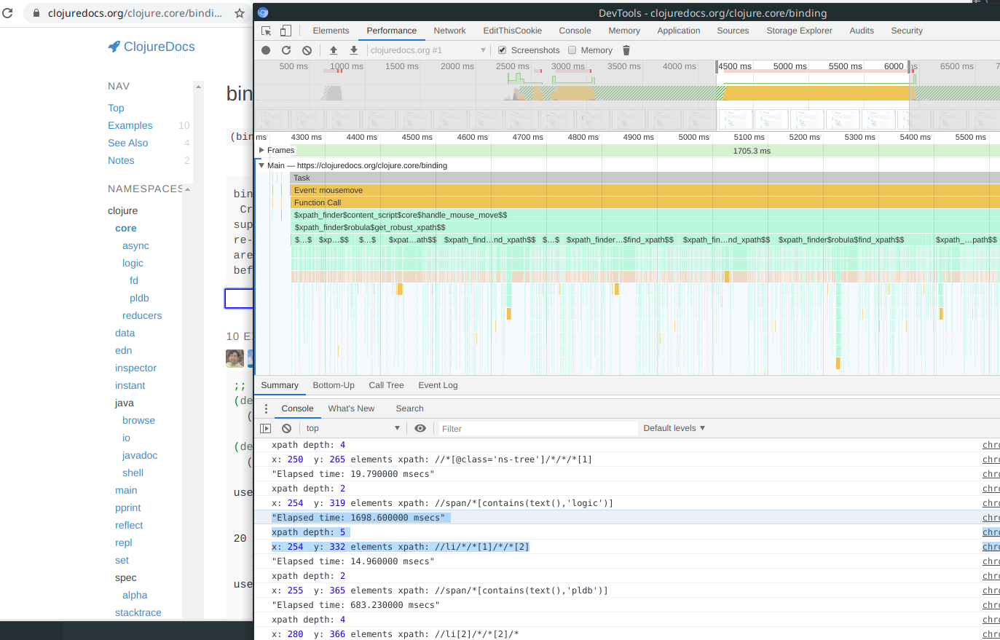
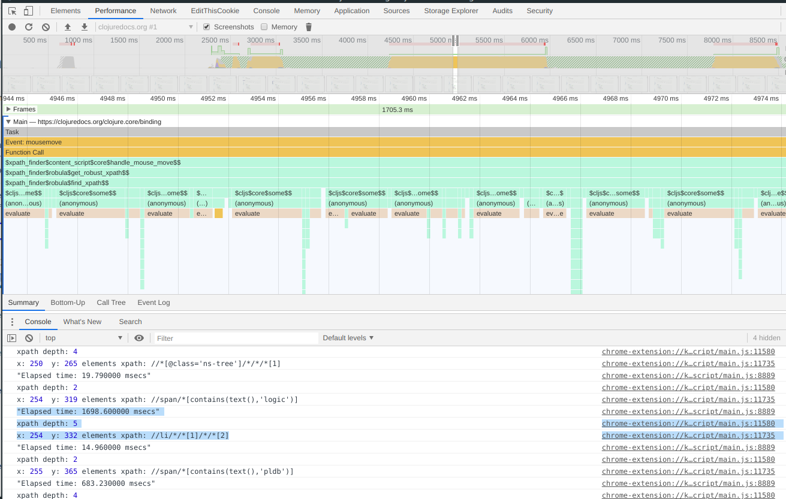

ClojureScript实现xpath定位器生成-1
1 简介
从dom元素生成唯一的xpath定位器，有多种方法，最简单的就是从/html开始的全路径，如果生成比较健壮的xpath路径，则不容易实现，特别是动态网页，元素位置会发生动态变化的情况，自动生成的xpath定位器健壮性比较差。根据Robula+: An algorithm for generating robust XPath locators for web testing文章介绍的算法，参考robula-plus的实现，使用ClojureScript实现robula+算法，并进行相关优化。
算法的思想是比较简单的，从//*匹配任意元素开始，通过替换元素名，添加id,添加text,添加各种属性，添加多个属性集合，添加元素位置索引，添加父级定位的方式来查找唯一匹配元素的xpath定位器。通过不断递归父级进行查找就能找到最短的xpath定位器。
2 算法实现
content-script里面处理鼠标移动事件，标记当前指向的元素并获取元素的xpath定位器：
(def last-ele "最后指向的元素" (atom nil)) (defn remove-mark [ele] (when ele (dommy/remove-style! ele :box-shadow) (reset! last-ele nil))) (defn mark-element [ele] (when ele (dommy/set-style! ele :box-shadow "0px 0px 2px 2px blue") (reset! last-ele ele))) (defn handle-mouse-move [e] (let [x (.-clientX e) y (.-clientY e)] (if-let [ele (js/document.elementFromPoint x y)] (let [prev-ele @last-ele] (when-not (= ele prev-ele) (remove-mark prev-ele) (mark-element ele) (log "x:" x " y:" y "elements xpath:" (get-robust-xpath js/document ele)))) (remove-mark @last-ele))))
robula算法代码:
(ns xpath-finder.robula (:require [oops.core :refer [oget oset! ocall oapply ocall! oapply! oget+ oset!+ ocall+ oapply+ ocall!+ oapply!+]] [clojure.string :as string] [goog.string :as gstring] [goog.string.format] [clojure.set :refer [difference]] [dommy.core :as dommy :refer-macros [sel sel1]])) ;;;;;;;;;;;;; xpath 辅助函数 (def xpath-length count) (def xpath-head first) (defn xpath-head-has-predicates? [xpath] (-> (xpath-head xpath) (string/includes? "["))) (defn xpath-head-has-position? [xpath] (let [head (xpath-head xpath)] (or (string/includes? head "position()") (string/includes? head "last") (re-find #"\[[0-9]+\]" head)))) (defn xpath-head-has-text? [xpath] (-> (xpath-head xpath) (string/includes? "text()"))) (defn xpath-head-with-all? [xpath] (-> (xpath-head xpath) (string/starts-with? "*"))) (defn xpath-add-predicate-to-head [xpath predicate] (let [new-head (-> (first xpath) (str predicate))] (assoc (into [] xpath) 0 new-head))) (defn xpath-replace-head-all [xpath head-tag] (let [new-head (str head-tag (-> (first xpath) (subs 1)))] (assoc (into [] xpath) 0 new-head))) (defn xpath-add-head-all [xpath] (cons "*" xpath)) (def xpath-empty []) (def xpath-all ["*"]) (defn xpath->str [xpath] (->> (string/join "/" xpath) (str "//"))) (comment ;; 使用序列表示xpath,每一个元素表示xpath的一个层级(level),避免使用一个字符串表示整个xpath ;; 会因为字符串中出现/字符导致路径错误。 (xpath-add-predicate-to-head ["div" "span" "a"] "[text() = 'aa']") (xpath-head-has-text? *1) (xpath-add-head-all empty-xpath) ) ;;;;;;;;;;;;; dom helper (defn get-previous-element-siblings "获取所有之前的兄弟元素" [element] (->> (iterate #(oget % "previousElementSibling") element) (take-while identity))) (defn get-all-ancestor "获取所有父级元素，包括自身" [element] (->> (iterate #(oget % "parentElement") element) (take-while identity))) (defn get-ancestor-count [element] (-> (get-all-ancestor element) count)) (defn get-ancestor-at [element index] (-> (get-all-ancestor element) (nth index))) (defn get-attributes "获取元素的所有属性" [element] (let [get-attr-kv (fn [attr] [(oget attr "name") (oget attr "value")]) attrs (oget element "attributes")] (->> (range (oget attrs "length")) (map #(-> (oget+ attrs (str %)) get-attr-kv)) (into {})))) (defn tag-name [element] (-> (oget element "tagName") string/lower-case )) ;;;;;;;;;;;;; robula xpath locator (def ^:dynamic attribute-priorization-list #{"name" "class" "title" "alt" "value"}) (def ^:dynamic attribute-black-list #{"href" "src" "onclick" "onload" "tabindex" "width" "height" "style" "size" "maxlength"}) (defn get-xpath-head-ancestor "获取xpath头部的祖先元素" [xpath element] (->> (xpath-length xpath) dec (get-ancestor-at element))) (defn transf-convert-star "转换xpath的*表示" [xpath element] (let [ancestor (get-xpath-head-ancestor xpath element)] (when (xpath-head-with-all? xpath) (vector (xpath-replace-head-all xpath (tag-name ancestor)))))) (def ^:dynamic *max-text-length* 30) (defn xpath-trans [k v] (if (string/includes? v "'") [(gstring/format "translate(%s,\"'\",\" \")" k) (string/replace v "'" " ")] [k v])) (defn xpath-contains-trans [k v] (->> (xpath-trans k v) (apply gstring/format "contains(%s,'%s')"))) (defn make-xpath-text-exp "构造text表达式" [s] (let [text-fn-name (if (> (count s) *max-text-length*) ;;注意xpath substring第一个位置为1，不是0 (gstring/format "substring(text(),1,%d)" *max-text-length*) "text()") target-s (subs s 0 *max-text-length*)] (->> (xpath-contains-trans text-fn-name target-s) (gstring/format "[%s]")))) (defn make-xpath-attr-predicate [attr-key value] (let [k (str "@" attr-key)] (if (> (count value) *max-text-length*) (->> (subs value 0 *max-text-length*) (xpath-contains-trans k)) (->> (xpath-trans k value) (apply gstring/format "%s='%s'"))))) (defn make-xpath-attr-exp [attr-key value] (->> (make-xpath-attr-predicate attr-key value) (gstring/format "[%s]"))) (defn transf-add-id "添加id属性" [xpath element] (let [ancestor (get-xpath-head-ancestor xpath element) ancestor-id (oget ancestor "id")] (when (and (seq ancestor-id) (not (xpath-head-has-predicates? xpath))) (vector (->> (make-xpath-attr-exp "id" ancestor-id) (xpath-add-predicate-to-head xpath)))))) (defn transf-add-text "添加text属性" [xpath element] (let [ancestor (get-xpath-head-ancestor xpath element) ancestor-text (oget ancestor "textContent")] (when (and (seq ancestor-text) (not (xpath-head-has-position? xpath)) (not (xpath-head-has-text? xpath))) (vector (->> (make-xpath-text-exp ancestor-text) (xpath-add-predicate-to-head xpath)))))) (defn transf-add-attribute "添加其他属性" [xpath element] (let [ancestor (get-xpath-head-ancestor xpath element) ancestor-attrs (get-attributes ancestor)] (when (not (xpath-head-has-predicates? xpath)) (let [ancestor-priority-attrs (select-keys ancestor-attrs attribute-priorization-list) ancestor-other-attrs (->> (difference (set (keys ancestor-attrs)) attribute-priorization-list attribute-black-list) (select-keys ancestor-attrs))] (->> (concat ancestor-priority-attrs ancestor-other-attrs) (map (fn [[k v]] (->> (make-xpath-attr-exp k v) (xpath-add-predicate-to-head xpath))))))))) (defn powerset [coll] (reduce (fn [a x] (into a (map #(conj % x)) a)) #{#{}} coll)) (defn priorization-attr-compare "优先属性比较" [priorization-set attr1 attr2] (cond (priorization-set (first attr1)) -1 (priorization-set (first attr2)) 1 :else 0)) (defn transf-add-attribute-set "添加其他属性集合(幂集)" [xpath element] (let [ancestor-attrs (-> (get-xpath-head-ancestor xpath element) get-attributes)] (when (not (xpath-head-has-predicates? xpath)) (let [ancestor-useful-attrs (->> (difference (set (keys ancestor-attrs)) attribute-black-list) (select-keys ancestor-attrs)) attr-power-set (->> (powerset ancestor-useful-attrs) (filter #(> (count %) 1))) priorization-set-val-cmp (->> (conj attribute-priorization-list "id") (partial priorization-attr-compare)) sorted-attr-set (->> (map #(sort priorization-set-val-cmp %) attr-power-set) (sort (fn [attr-set1 attr-set2] (let [l1 (count attr-set1) l2 (count attr-set2)] (if (= l1 l2) ;; 如果长度相等，则按照优先级顺序排序 (->> (zipmap attr-set1 attr-set2) (drop-while #(= (first %) (second %))) first (apply priorization-set-val-cmp)) (compare l1 l2)))))) gen-attr-set-xpath (fn [attrs] (->> (map (fn [[k v]] (make-xpath-attr-predicate k v)) attrs) (string/join " and ") (gstring/format "[%s]") (xpath-add-predicate-to-head xpath)))] (map gen-attr-set-xpath sorted-attr-set))))) (defn transf-add-position "添加位置索引" [xpath element] (let [ancestor (get-xpath-head-ancestor xpath element) prev-siblings (get-previous-element-siblings ancestor)] (when (not (xpath-head-has-position? xpath)) (let [idx (if (xpath-head-with-all? xpath) (count prev-siblings) (->> (map tag-name prev-siblings) (filter #(= (tag-name ancestor) %)) count))] (when (pos? idx) (vector (->> (str "[" idx "]") (xpath-add-predicate-to-head xpath)))))))) (defn transf-add-level "添加深度" [xpath element] (when (< (xpath-length xpath) (dec (get-ancestor-count element))) ;;(.log js/console "add level:" (str xpath) " ancestor count:" (get-ancestor-count element)) (vector (xpath-add-head-all xpath)))) (defn locate-count [document xpath] (-> (.evaluate document xpath document nil (oget js/XPathResult "ORDERED_NODE_SNAPSHOT_TYPE") nil) (oget "snapshotLength"))) (defn unique-locate? "唯一定位？" [xpath element document] ;;(.log js/console"check unique xpath:" xpath) (let [node-snap (.evaluate document xpath document nil (oget js/XPathResult "ORDERED_NODE_SNAPSHOT_TYPE") nil)] (and (= 1 (oget node-snap "snapshotLength")) (identical? element (.snapshotItem node-snap 0))))) (defn get-element-by-xpath [document xpath] (-> (.evaluate document xpath document nil (oget js/XPathResult "FIRST_ORDERED_NODE_TYPE") nil) (oget ".singleNodeValue"))) (def $x (partial get-element-by-xpath js/document)) (defn find-xpath [xpath-list doc element] ;;(js/console.log "xpath-stream:" (str (map xpath->str xpath-list))) (when (seq xpath-list) (let [xpath (first xpath-list) new-xpath-list (concat (transf-convert-star xpath element) (transf-add-id xpath element) (transf-add-text xpath element) (transf-add-attribute xpath element) (transf-add-attribute-set xpath element) (transf-add-position xpath element) (transf-add-level xpath element)) paths (-> new-xpath-list distinct vec)] (if-let [result (some #(when (-> (xpath->str %) (unique-locate? element doc)) %) paths)] result (recur (-> xpath-list rest (concat paths) vec) doc element))))) (defn get-robust-xpath [document element] (let [r (time (find-xpath [xpath-all] document element))] (js/console.log "xpath depth:" (xpath-length r)) (xpath->str r) ))
3 运行测试
当xpath路径比较深的时候，查找速度就很慢，因为要不断执行evaluate进行xpath测试。

图1 chrome性能分析结果,黄色为GC执行时间,褐色为evaluate执行时间

图2 find_xpath执行耗时(局部放大)
4 总结
因为robula+算法依靠不断地进行xpath测试，来找到最短的xpath定位器，所以性能受到唯一定位的层级深度影响。当超过5层的时候，就需要几秒钟才能找到xpath定位器，性能不是很理想。
通过减少执行xpath测试的次数,或者使用css定位器进行查找，速度应该会更快一点，留到下一节实现。